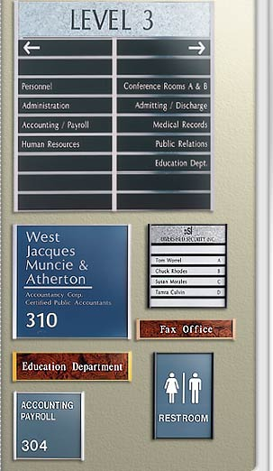

|
The
Euro Sign System with 20 standard sizes in 5
anodized colors is designed to make tamper resistant
signs and directories. The clean lines of both
the 3/8" round and 3/8" square extrusions
make an attractive, functional, inexpensive
solution to interior signage.
- Five anodized finishes:
Satin Silver, Polished Silver, Matte Black,
Polished Yellow Gold, and Polished Rose Gold.
- Specially designed machine
screws lock the entire group of sign assemblies
in place. Simply remove the top screws and
slide sign assemblies out for a quick change.
Screw holes are tapped for repeated use.
- Vertical dividers can be
used to form multiple columns.
- Custom sizes are available.
|

|